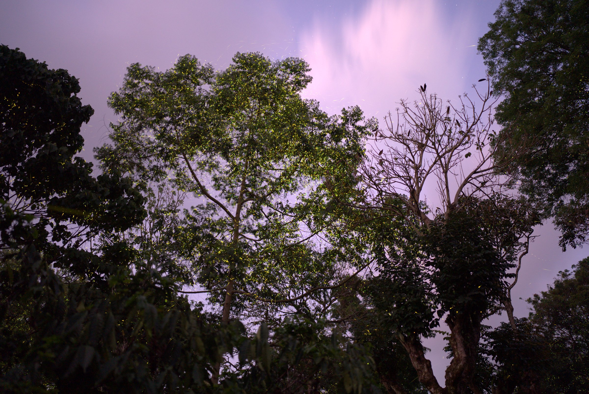
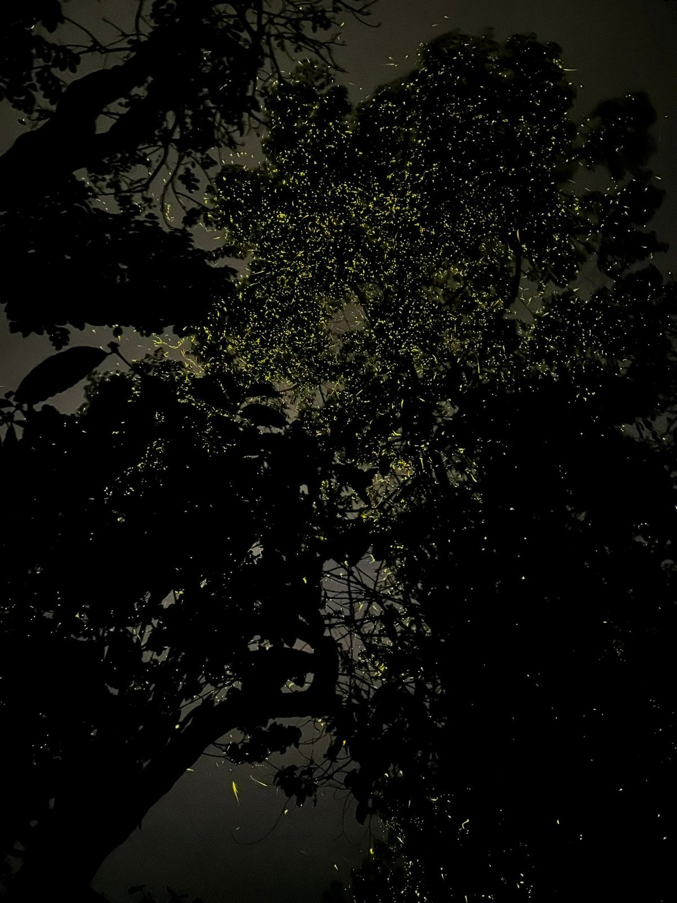
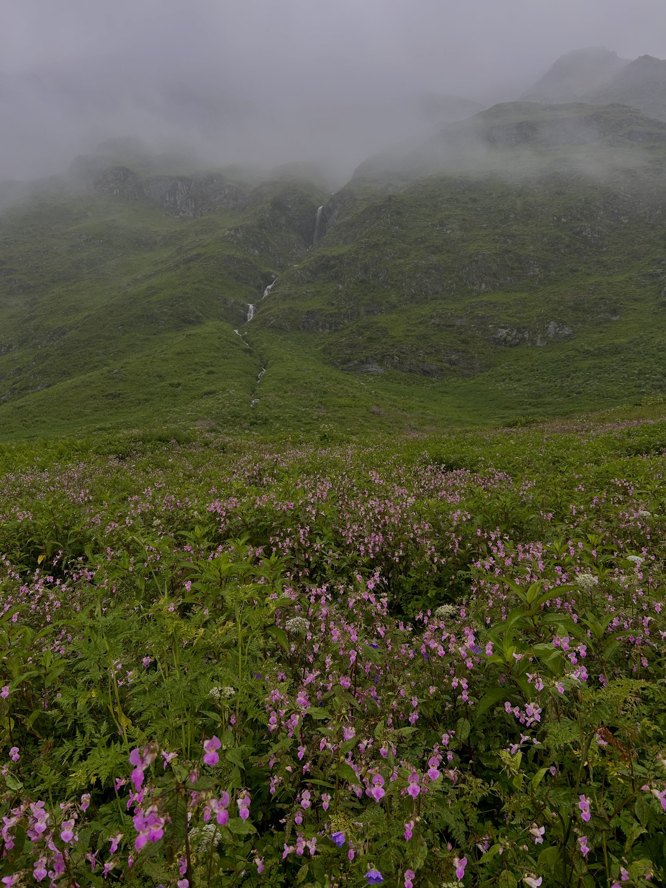
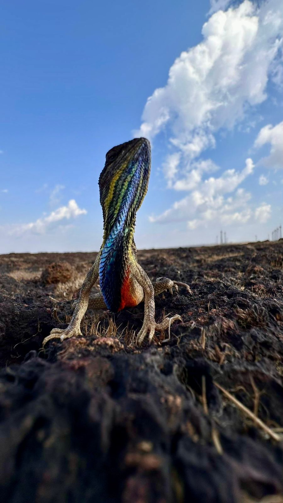

From the field
Journal
Field notes and small stories

Fireflies in Valparai
When I've gone herping, I've always heard the phrase “the forest comes alive at night.” Most of the time that meant sounds to me — frogs, alarm…

Valley of Flowers
As a kid, I saw places like this only in fairy tales and movies. Later I realised they actually exist, and I really wanted to see…

The Most Beautiful Reptile
I am someone who can never answer when someone asks me what my favourite animal is, or the most beautiful creature I've seen. But now, at least, I…